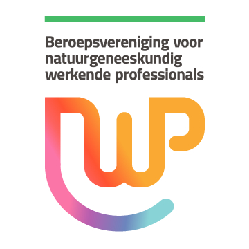
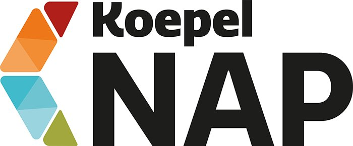

Thirza Wondergem
Natuurgeneeskundig therapeut · NWP Westers, specialisme Natuurgeneeskunde
Welkom! Mijn naam is Thirza! Ik hou van de natuur en van buiten-zijn en blijf me verwonderen over hoe de schepping in elkaar zit en hoe wij als mensen daar een onderdeel van zijn.
Sinds januari 2026 werk ik vanuit mijn eigen praktijkruimte als natuurgeneeskundig therapeut. Mint staat voor een frisse, heldere en no-nonsense manier van kijken naar klachten: geen vage verhalen, maar onderzoek, inzicht en een concreet behandelplan.
Ik werk vanuit een positieve, christelijke levensovertuiging. Iedereen is welkom in mijn praktijk en wordt met respect behandeld.
Mijn aanpak
Helder, onderbouwd, persoonlijk.
Bij Mint Praktijk voor Natuurgeneeskunde richt ik me op het ondersteunen van jouw gezondheid en welzijn vanuit een natuurgeneeskundig, holistisch perspectief. Vis Medicatrix Naturae is hierin leidend: de geneeskracht van de natuur. Hierin wordt niet zozeer bedoeld dat we alleen natuurlijke middelen inzetten voor herstel, maar dat je lichaam zélf die natuur is. Je bent geschapen met een wonderlijk zelfgenezend vermogen. Binnen de natuurgeneeskunde willen we dat juist stimuleren.
Mijn doel is om samen met jou te ontdekken wat jouw lichaam nodig heeft, zodat je weer in balans komt en je energieker voelt.
Opleiding & registratie
Om jou goed te kunnen begeleiden heb ik diverse opleidingen en bijscholingen gevolgd:
Ik ben aangesloten bij de beroepsvereniging NWP. Voor deze beroepsvereniging volg ik jaarlijks de verplichte bij- en nascholingen. Via mijn lidmaatschap bij de NWP ben ik aangesloten bij de Koepel NAP en de geschillencommissie van CamCoop. Hiermee voldoe ik volledig aan de wettelijke eisen van de Wkkgz, zodat jij als cliënt verzekerd bent van kwalitatieve en veilige zorg.


Voedingstips voor een gezonde spijsvertering
Praktische tips en de eerste stappen naar een gezonde spijsvertering. Download 'm direct, helemaal gratis.
Je ontvangt de checklist meteen als download, en af en toe incidenteel nieuws van Mint. Uitschrijven kan altijd.